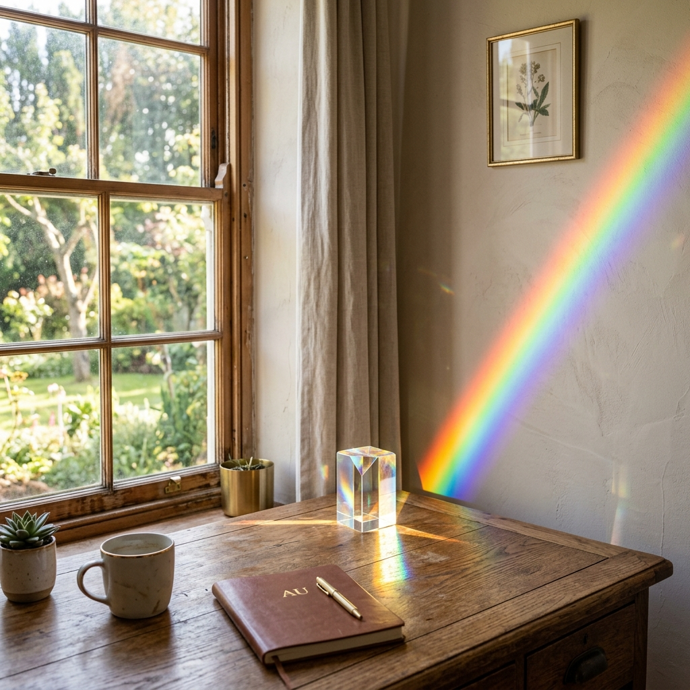
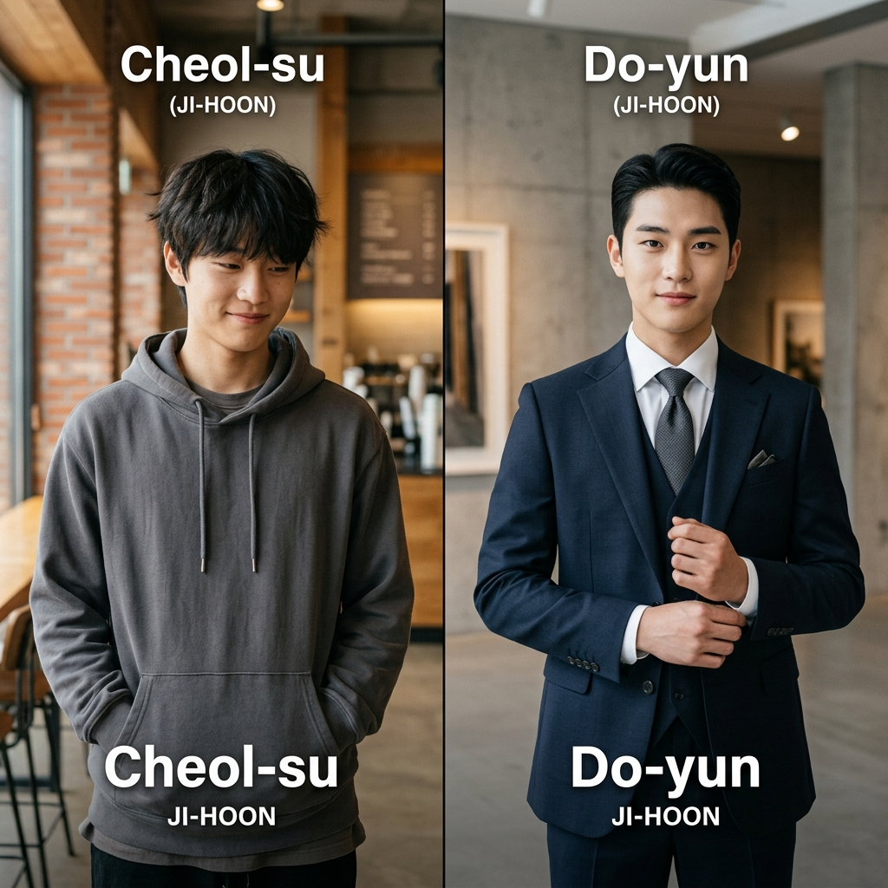

QARAH 블로그
이름에 담긴 이야기를 탐험합니다
글로벌 빅테크 기업 TOP 5 CEO 이름 분석 — 세계를 움직이는 이름의 비밀
애플, 마이크로소프트, 구글, 메타, 엔비디아. 글로벌 빅테크를 이끄는 TOP 5 CEO들의 이름에 담긴 어원과 리더십의 상관관계를 QARAH가 분석합니다.
[금융의 전설 1부] 워렌 버핏 — 기다림의 미학, 가치 투자의 정수
오마하의 현인 워렌 버핏. 내재 가치와 안전 마진, 그리고 인내심이 만드는 복리의 마법을 분석합니다.

[금융의 전설 2부] 찰리 멍거 — 격자틀 모델, 다학제적 사고의 힘
버핏의 영원한 파트너 찰리 멍거. 심리학과 물리학을 관통하는 그의 '격자틀 모델' 사고법을 알아봅니다.
[금융의 전설 3부] 조지 소로스 — 재귀성 이론, 시장의 불균형을 뚫다
금융의 연금술사 조지 소로스. 재귀성 이론을 통해 시장의 거품과 붕괴를 포착하는 천재적 감각을 분석합니다.
[금융의 전설 4부] 피터 린치 — 일상의 발견, 텐배거를 찾는 눈
개인 투자자의 영웅 피터 린치. 마트와 일상 속에서 10배 수익주(텐배거)를 찾아내는 비결을 공유합니다.
[금융의 전설 5부] 레이 달리오 — 원칙의 힘, 시스템으로 이기는 투자
시스템 투자의 대가 레이 달리오. 올웨더 포트폴리오와 '원칙' 중심의 의사결정 시스템을 분석합니다.
2026 글로벌 인기 영어 이름 TOP 5 — 세련된 선택을 위한 가이드
Noah, Liam, Emma... 전 세계를 아우르는 최고의 영어 이름 5가지를 어원과 함께 심층 분석합니다.

이름에 담긴 '빛'의 미학 — Stella부터 Seo-yoon까지
Stella, Lucas, 서윤... 동서양을 막론하고 가장 사랑받는 '빛'의 의미를 담은 이름들을 탐구합니다.

성경 속 강인한 리더들의 이름과 그 속에 담긴 부름
David, Joshua, Esther... 한 시대를 이끌었던 성경 속 위대한 리더들의 이름에 담긴 사명과 리더십을 분석합니다.
K-컬처가 바꾼 서구권의 이름 트렌드 — Ji-woo가 친숙해진 이유
뉴욕과 파리에서 불리는 한국 이름들. K-드라마와 K-POP이 전 세계 작명 문화에 끼친 놀라운 변화를 확인하세요.

성공하는 CEO들의 이름 공통점 분석 — 소리의 힘과 의미
글로벌 리더들의 이름 속에 숨겨진 언어학적 패턴. 발음과 어원이 리더십의 첫인상에 미치는 영향을 분석합니다.

2026년 실시간 검색 1위를 차지한 이름 TOP 5 — 이름에 담긴 운명의 힘
아이유, 변우석, 장원영, 심석희... 검색창을 지배한 이름들에는 '빛', '베풂', '희망'이라는 놀라운 공통점이 숨어 있었습니다. 5개의 이름에 담긴 운명의 코드를 해독합니다.

2026 한국 개명 트랜드 비포 & 애프터 — 이름이 바꾸는 인상의 기적
철수에서 도윤으로, 영자에서 서아까지. 8쌍의 실사 이미지로 분석하는 개명의 심리학적 인상학적 변화를 확인하세요.
2026년생 아기 이름 트렌드 10 — 시대의 감성과 부모의 소망이 만나는 지점
부드러운 음절의 귀환, 중성적 매력의 확산 등 2026년 대한민국 신생아 작명 시장을 관통하는 10가지 핵심 트렌드를 QARAH가 심층 분석합니다.

K-POP의 정상을 차지한 이름들 — 2026 TOP 3 브랜드의 언어학적 비밀
BTS, IVE, 워너원... 전 세계를 사로잡은 이름들 속에는 어떤 브랜딩 전략이 숨겨져 있을까요? 2026년 정상을 유지하는 리더들의 이름을 QARAH의 시각으로 분석합니다.

2026년 OECD 38개국 정상들의 이름 분석 — 리더의 성함에 담긴 학술적 힘
세계를 이끄는 리더들의 이름에는 어떤 힘이 숨겨져 있을까요? 도널드, 윤석열, 에마뉘엘 등 주요국 정상들의 성함을 학술적 어원을 통해 심층 분석합니다.

OECD 38개국 이름의 유래 — 나라 이름에 담긴 놀라운 뜻
프랑스는 "자유인의 땅", 일본은 "해 뜨는 곳", 한국은 "고려"에서. OECD 38개 회원국 이름에 숨겨진 수천 년의 역사를 가입 순서대로 풀어봅니다.